X12¶
{X1,X5}-HARMONIC CONJUGATE OF X11
harmonic_feuerbach_point(A, B, C) -> X_12 • Feuerbach • Kimberling ETC • Kimberling X(12) • Search Value \((6, 9, 13)\): \(\frac{2420 \sqrt{35}}{10731} \approx 1.334163924620\)
A'B'C' be the touch points of the nine-point circle with the A-, B-, C- excircles, respectively. The lines AA', BB', CC' concur in X12.X12 ({X1,X5}-HARMONIC CONJUGATE OF X11) constructed at X12 = \(\left(6,\; \frac{512}{129}\right)\) in exact rational coordinates on the Heronian reference triangle \((a, b, c) = (15, 13, 14)\) over \(\mathbb{Q}\) with vertices A = \((0, 0)\), B = \((14, 0)\), C = \((5, 12)\), and area \(\Delta = 84\). Switch tabs above to inspect exact constructions on Right \((3, 4, 5)\), Kepler \((1, \sqrt{\phi}, \phi)\), and Kimberling \((6, 9, 13)\).¶
Constructed Elements
Derived Triangle: Feuerbach Triangle △FaFbFc — vertices Fa, Fb, Fc (Formed by nine-point circle tangency points with the three excircles)
Auxiliary Points: Tc, Mc
Circle: Incircle (incircle) — Inscribed circle tangent to sidelines at T_a, T_b, T_c; centered at X1 INCENTER
Circle: Nine-Point Circle (ninepointcircle) — Passes through side midpoints M_a, M_b, M_c and altitude feet H_a, H_b, H_c; centered at X5
Concurrence Lines (Feuerbach Cevians): A–Fa, B–Fb, C–Fc concurring at X12
Homogeneous Coordinates & Exact Invariants¶

Homogeneous Coordinates of X12 on Heronian \((15, 13, 14)\): orthogonal trilinear struts \((\alpha, \beta, \gamma)\) and signed barycentric sub-triangles \((\Delta_a, \Delta_b, \Delta_c)\).¶
Trilinear Coordinates (\(\alpha : \beta : \gamma = 4212 : 4205 : 4160\)): Dropping orthogonal perpendiculars X12Ta, X12Tb, and X12Tc from X12 to sidelines BC, CA, and AB meets the sides at right-spread pedal feet Ta = \(\left(\frac{9906}{1075},\; \frac{20576}{3225}\right)\), Tb = \(\left(\frac{16690}{7267},\; \frac{40056}{7267}\right)\), and Tc = \(\left(6,\; 0\right)\). The orthogonal strut lengths on \((15, 13, 14)\) are \(d_a = \frac{864}{215}\), \(d_b = \frac{6728}{1677}\), and \(d_c = \frac{512}{129}\), reducing to homogeneous trilinears \(\alpha : \beta : \gamma = 4212 : 4205 : 4160\).
Barycentric Coordinates (\(u : v : w = 972 : 841 : 896\)): Joining X12 to the vertices along X12A, X12B, and X12C forms signed sub-triangles △X12BC, △X12CA, and △X12AB of exact signed areas \(\Delta_a = \frac{1296}{43}\), \(\Delta_b = \frac{3364}{129}\), and \(\Delta_c = \frac{3584}{129}\) (summing to \(\Delta_a + \Delta_b + \Delta_c = 84 = \Delta\)), in homogeneous ratio \(u : v : w = 972 : 841 : 896\).
Reference Triangle |
Field |
Cartesian \((x, y)\) |
Trilinears \(\alpha : \beta : \gamma\) |
Barycentrics \(u : v : w\) |
Sub-Areas \((\Delta_a, \Delta_b, \Delta_c)\) |
Directed Trilinear \((d_a,\, Q_a)\) |
|---|---|---|---|---|---|---|
Heronian \((15, 13, 14)\) |
\(\mathbb{Q}\) |
\(\left(6,\; \frac{512}{129}\right)\) |
\(4212 : 4205 : 4160\) |
\(972 : 841 : 896\) |
\(\left(\frac{1296}{43},\; \frac{3364}{129},\; \frac{3584}{129}\right)\) |
\(\frac{864}{215}\; (Q_a = \frac{746496}{46225})\) |
Right \((3, 4, 5)\) |
\(\mathbb{Q}\) |
\(\left(\frac{44}{15},\; \frac{49}{45}\right)\) |
\(45 : 40 : 49\) |
\(27 : 32 : 49\) |
\(\left(\frac{3}{2},\; \frac{16}{9},\; \frac{49}{18}\right)\) |
\(1\; (Q_a = 1)\) |
Kepler \((1, \sqrt{\phi}, \phi)\) |
\(\mathbb{Q}(\sqrt{\phi})\) |
\(\left(- \frac{3 \phi \sqrt{\phi}}{59} - \frac{16 \sqrt{\phi}}{59} + \frac{23 \phi}{59} + \frac{44}{59},\; \frac{28 \phi \sqrt{\phi}}{59} - \frac{75 \sqrt{\phi}}{118} + \frac{23 \phi}{118} - \frac{15}{118}\right)\) |
\(\phi \sqrt{\phi} + \phi : \sqrt{\phi} \left(\phi + 1\right) : \phi \sqrt{\phi} + 2\) |
\(\phi \sqrt{\phi} + \phi : 2 \phi + 1 : \phi \sqrt{\phi} + \sqrt{\phi} + 2 \phi\) |
\(\left(- \frac{13 \phi \sqrt{\phi}}{236} + \frac{29 \sqrt{\phi}}{236} + \frac{21 \phi}{236} - \frac{3}{118},\; \frac{8 \phi \sqrt{\phi}}{59} + \frac{33 \sqrt{\phi}}{236} - \frac{29 \phi}{236} - \frac{17}{236},\; - \frac{19 \phi \sqrt{\phi}}{236} + \frac{14 \sqrt{\phi}}{59} + \frac{2 \phi}{59} + \frac{23}{236}\right)\) |
\(- \frac{13 \phi \sqrt{\phi}}{118} + \frac{29 \sqrt{\phi}}{118} + \frac{21 \phi}{118} - \frac{3}{59}\; (Q_a = \frac{207 \phi \sqrt{\phi}}{3481} - \frac{447 \sqrt{\phi}}{6962} + \frac{307 \phi}{6962} - \frac{27}{3481})\) |
Kimberling \((6, 9, 13)\) |
\(\mathbb{Q}(\sqrt{35})\) |
\(\left(\frac{51824}{6643},\; \frac{18000 \sqrt{35}}{46501}\right)\) |
\(23595 : 18772 : 40500\) |
\(605 : 722 : 2250\) |
\(\left(\frac{2420 \sqrt{35}}{3577},\; \frac{2888 \sqrt{35}}{3577},\; \frac{9000 \sqrt{35}}{3577}\right)\) |
\(\frac{2420 \sqrt{35}}{10731}\; (Q_a = \frac{29282000}{16450623})\) |
Alternate Coordinates5 forms
Trilinears: \(\cos^{2}(B/2 - C/2) : :\)
Trilinears: \(1 + \cos A + 2 \cos B \cos C : :\)
Trilinears: \(1 - \cos A + 2 \sin B \sin C : :\)
Trilinears: \(bc(b + c)^{2}/(b + c - a) : :\)
Barycentrics: \((b + c)^{2}/(b + c - a) : :\)
Incident Central Lines¶
Principal Central Lines Through X12 on Heronian \((15, 13, 14)\).¶
Feuerbach Line {1, 5, 11, 12} — collinear axis through X1 (Incenter, \(\left(6,\; 4\right)\)), X5 (Nine-Point Center, \(\left(6,\; \frac{63}{16}\right)\)), X11 (Feuerbach Point, \(\left(6,\; 8\right)\)), X12, with exact Cartesian equation \(x - 6 = 0\) (spread \(1\), perpendicular to baseline AB).
Centroid–Exsimilicenter(Circumcircle, Incircle) Central Line {2, 12, 56} — collinear axis through X2 (Centroid, \(\left(\frac{19}{3},\; 4\right)\)), X12, X56 (Exsimilicenter(Circumcircle, Incircle), \(\left(\frac{166}{33},\; \frac{128}{33}\right)\)), with exact Cartesian equation \(12 x - 129 y + 440 = 0\) (spread \(\frac{16}{1865}\) relative to AB).
Orthocenter–Insimilicenter(Circumcircle, Incircle) Central Line {4, 12, 55} — collinear axis through X4 (Orthocenter, \(\left(5,\; \frac{15}{4}\right)\)), X12, X55 (Insimilicenter(Circumcircle, Incircle), \(\left(\frac{614}{97},\; \frac{392}{97}\right)\)), with exact Cartesian equation \(113 x - 516 y + 1370 = 0\) (spread \(\frac{12769}{279025}\) relative to AB).
Spieker Center–Orthocenter Of The Intouch Triangle Central Line {10, 12, 65} — collinear axis through X10 (Spieker Center, \(\left(\frac{13}{2},\; 4\right)\)), X12, X65 (Orthocenter Of The Intouch Triangle, \(\left(\frac{358}{65},\; \frac{256}{65}\right)\)), with exact Cartesian equation \(8 x - 129 y + 464 = 0\) (spread \(\frac{64}{16705}\) relative to AB).
X12 lies on the cubics on K589, K672, K720, K877, K1058, K1187.
Full Incident Central Line Catalog1279 lines
{1, 5}, {2, 56}, {3, 498}, {4, 55}, {6, 5230}, {7, 1268}, {8, 2099}, {9, 5857}, {10, 65}, {13, 7006}, {14, 7005}, {17, 203}, {18, 202}, {19, 37376}, {20, 5217}, {21, 5080}, {22, 9658}, {24, 9659}, {25, 10830}, {28, 20989}, {30, 35}, {31, 7299}, {32, 9650}, {33, 235}, {34, 427}, {36, 140}, {37, 225}, {38, 1393}, {39, 18982}, {40, 1836}, {42, 1834}, {43, 47514}, {45, 4331}, {46, 11246}, {54, 215}, {57, 1224}, {58, 17734}, {59, 3615}, {63, 1454}, {64, 12930}, {67, 32288}, {68, 3157}, {71, 1901}, {73, 3142}, {74, 12372}, {75, 21405}, {76, 12837}, {78, 5794}, {79, 484}, {83, 12835}, {84, 12677}, {85, 120}, {86, 14011}, {90, 17699}, {98, 10799}, {99, 13181}, {100, 2475}, {104, 6952}, {108, 451}, {109, 2372}, {110, 2477}, {112, 13295}, {113, 3024}, {114, 3023}, {115, 1500}, {116, 1362}, {117, 1364}, {118, 3022}, {121, 1357}, {122, 3324}, {123, 1359}, {124, 1361}, {125, 1425}, {126, 3325}, {127, 3320}, {128, 3327}, {132, 6020}, {133, 7158}, {137, 7159}, {141, 1469}, {142, 8581}, {144, 18231}, {145, 3813}, {153, 6888}, {155, 10055}, {165, 9579}, {171, 1399}, {172, 230}, {174, 8088}, {177, 12622}, {182, 38120}, {184, 9652}, {185, 26956}, {190, 24835}, {197, 4185}, {198, 37384}, {201, 756}, {208, 1360}, {214, 18976}, {219, 5747}, {221, 1853}, {222, 34030}, {223, 10366}, {228, 407}, {229, 37158}, {255, 5348}, {261, 31620}, {262, 12836}, {265, 10088}, {278, 5142}, {281, 1118}, {306, 3714}, {313, 349}, {318, 4081}, {321, 3704}, {325, 1909}, {330, 7777}, {341, 29641}, {344, 2899}, {348, 7223}, {354, 1210}, {371, 9646}, {372, 13958}, {377, 1259}, {381, 1479}, {382, 4302}, {384, 26629}, {386, 9552}, {390, 3832}, {392, 21616}, {396, 2307}, {397, 7127}, {402, 11904}, {403, 6198}, {404, 3035}, {405, 10198}, {406, 7337}, {428, 5310}, {431, 1824}, {443, 1466}, {474, 1470}, {478, 20029}, {480, 2550}, {481, 31557}, {482, 31558}, {485, 1335}, {486, 1124}, {493, 10951}, {494, 10952}, {497, 3091}, {499, 999}, {502, 14873}, {515, 2646}, {516, 15837}, {517, 6842}, {518, 6067}, {519, 4870}, {523, 2599}, {524, 4400}, {528, 3871}, {535, 5267}, {546, 3583}, {547, 3582}, {548, 4316}, {549, 7280}, {550, 5010}, {551, 3825}, {553, 3828}, {573, 9553}, {574, 9651}, {578, 9666}, {590, 2067}, {594, 2171}, {597, 38091}, {603, 750}, {604, 17398}, {611, 1352}, {613, 14561}, {614, 37439}, {615, 6502}, {618, 18974}, {619, 18975}, {625, 5194}, {629, 18973}, {630, 18972}, {631, 4293}, {641, 18988}, {642, 18989}, {651, 8614}, {664, 17084}, {671, 12349}, {740, 21927}, {774, 7069}, {858, 4296}, {894, 25978}, {908, 960}, {912, 13750}, {938, 3475}, {940, 5788}, {942, 1209}, {944, 6830}, {946, 1532}, {950, 8226}, {956, 26363}, {962, 6932}, {964, 28776}, {968, 1904}, {970, 10406}, {975, 21147}, {978, 37663}, {984, 37591}, {986, 3782}, {993, 7483}, {1000, 16615}, {1001, 2478}, {1010, 19839}, {1012, 6256}, {1014, 17551}, {1015, 1506}, {1018, 36637}, {1038, 1368}, {1040, 6823}, {1043, 14009}, {1056, 3086}, {1058, 3545}, {1060, 11585}, {1062, 15760}, {1069, 5654}, {1071, 12616}, {1086, 24443}, {1089, 3695}, {1091, 1109}, {1104, 3011}, {1106, 17124}, {1107, 37661}, {1125, 1319}, {1126, 3017}, {1146, 17451}, {1147, 9653}, {1151, 9649}, {1155, 4292}, {1193, 37662}, {1213, 1400}, {1214, 21530}, {1250, 5318}, {1279, 28027}, {1284, 4026}, {1297, 12935}, {1324, 37227}, {1327, 13694}, {1328, 13814}, {1334, 17747}, {1346, 2464}, {1347, 2463}, {1348, 1675}, {1349, 1674}, {1356, 45162}, {1365, 4013}, {1367, 20618}, {1385, 6882}, {1386, 38051}, {1388, 3476}, {1397, 43531}, {1398, 5094}, {1402, 4205}, {1403, 16062}, {1405, 17330}, {1406, 6180}, {1408, 5061}, {1415, 5277}, {1420, 3624}, {1423, 32784}, {1428, 3589}, {1429, 29633}, {1447, 7198}, {1450, 27627}, {1452, 1892}, {1457, 10459}, {1458, 17245}, {1460, 2049}, {1463, 3836}, {1464, 37558}, {1467, 41867}, {1468, 37646}, {1471, 17337}, {1482, 6980}, {1486, 4186}, {1503, 2330}, {1511, 18968}, {1512, 7686}, {1519, 45776}, {1537, 17662}, {1587, 19037}, {1588, 19038}, {1591, 3084}, {1592, 3083}, {1594, 1870}, {1598, 10833}, {1617, 11108}, {1621, 5046}, {1647, 46190}, {1650, 18958}, {1672, 1677}, {1673, 1676}, {1682, 2051}, {1696, 15849}, {1697, 1699}, {1709, 6259}, {1714, 37543}, {1722, 24789}, {1725, 35194}, {1727, 3652}, {1770, 3579}, {1785, 6750}, {1825, 37982}, {1829, 40635}, {1838, 37528}, {1846, 11105}, {1857, 7952}, {1858, 5777}, {1861, 1887}, {1869, 3198}, {1875, 25985}, {1877, 1883}, {1891, 37362}, {1894, 3185}, {1898, 5927}, {1899, 19349}, {1900, 44670}, {1906, 4319}, {1914, 7745}, {1940, 25987}, {1961, 34119}, {2003, 37559}, {2007, 2010}, {2008, 2009}, {2066, 3071}, {2072, 18447}, {2077, 31775}, {2078, 5259}, {2089, 8087}, {2098, 5603}, {2140, 4904}, {2222, 3109}, {2241, 5475}, {2242, 7746}, {2263, 23305}, {2275, 3815}, {2276, 5254}, {2283, 37165}, {2285, 17303}, {2292, 4415}, {2294, 21011}, {2295, 4559}, {2361, 3072}, {2362, 13973}, {2482, 18969}, {2534, 2541}, {2535, 2540}, {2548, 16502}, {2549, 31448}, {2564, 2567}, {2565, 2566}, {2595, 2607}, {2601, 36134}, {2614, 9276}, {2617, 45236}, {2635, 4300}, {2647, 5293}, {2771, 14526}, {2829, 6906}, {2883, 6285}, {2885, 40617}, {2933, 37397}, {2982, 51501}, {3006, 4696}, {3021, 5511}, {3025, 31841}, {3036, 38215}, {3039, 26793}, {3056, 5480}, {3068, 13896}, {3069, 13953}, {3070, 5414}, {3095, 10063}, {3096, 18957}, {3100, 9628}, {3101, 31498}, {3120, 4642}, {3146, 5281}, {3149, 26332}, {3178, 23947}, {3189, 5175}, {3212, 33949}, {3214, 4878}, {3219, 7098}, {3237, 5403}, {3238, 5404}, {3241, 3829}, {3244, 24387}, {3258, 33964}, {3259, 13756}, {3270, 43819}, {3293, 11553}, {3297, 42262}, {3298, 42265}, {3299, 7584}, {3301, 7583}, {3311, 13905}, {3312, 13963}, {3318, 25640}, {3333, 17728}, {3336, 5445}, {3337, 34753}, {3339, 4654}, {3340, 3679}, {3361, 31231}, {3419, 3811}, {3421, 6856}, {3428, 6825}, {3434, 3913}, {3452, 25917}, {3486, 5703}, {3487, 5818}, {3488, 6990}, {3526, 4317}, {3530, 4325}, {3542, 11399}, {3555, 10916}, {3560, 8069}, {3574, 13079}, {3576, 6922}, {3586, 18492}, {3596, 40828}, {3601, 5691}, {3612, 18481}, {3617, 9710}, {3622, 3847}, {3625, 39777}, {3626, 36920}, {3627, 18513}, {3628, 5563}, {3634, 3911}, {3638, 49565}, {3639, 49567}, {3647, 18977}, {3656, 30323}, {3666, 5530}, {3669, 19947}, {3674, 43037}, {3683, 12572}, {3690, 7144}, {3696, 21926}, {3703, 4385}, {3710, 3967}, {3712, 7283}, {3720, 47513}, {3721, 21965}, {3743, 30446}, {3745, 5717}, {3752, 23536}, {3755, 21955}, {3756, 28096}, {3761, 3933}, {3767, 31409}, {3812, 5123}, {3817, 5919}, {3837, 24099}, {3838, 5836}, {3839, 10385}, {3842, 4032}, {3843, 4309}, {3844, 24471}, {3845, 10386}, {3846, 28389}, {3850, 4857}, {3851, 6767}, {3853, 4330}, {3855, 9671}, {3869, 31053}, {3872, 32049}, {3878, 51409}, {3884, 11813}, {3885, 13463}, {3914, 4646}, {3920, 5133}, {3924, 33127}, {3930, 21029}, {3931, 4854}, {3935, 5178}, {3936, 17751}, {3944, 37598}, {3952, 27690}, {3969, 27558}, {3991, 21073}, {4017, 31946}, {4023, 9534}, {4030, 5015}, {4046, 5295}, {4059, 9436}, {4071, 4095}, {4092, 4605}, {4136, 21101}, {4202, 26030}, {4208, 26040}, {4222, 20988}, {4295, 5657}, {4297, 37374}, {4304, 31673}, {4305, 6845}, {4308, 5550}, {4311, 10165}, {4312, 5128}, {4313, 10883}, {4314, 12558}, {4315, 17575}, {4320, 30739}, {4321, 20195}, {4322, 30950}, {4327, 17278}, {4351, 37452}, {4354, 5160}, {4366, 16044}, {4423, 5084}, {4424, 30449}, {4429, 26125}, {4648, 21239}, {4653, 37357}, {4662, 25006}, {4679, 31435}, {4692, 30171}, {4861, 38455}, {4863, 6765}, {4868, 36250}, {5013, 9597}, {5016, 26227}, {5018, 39977}, {5025, 26590}, {5048, 13464}, {5050, 39901}, {5055, 7373}, {5056, 10589}, {5066, 15170}, {5068, 5274}, {5071, 47743}, {5082, 31140}, {5083, 6702}, {5086, 34772}, {5087, 41012}, {5099, 6023}, {5119, 12699}, {5122, 31776}, {5125, 34247}, {5143, 30362}, {5173, 34790}, {5174, 37371}, {5179, 16601}, {5183, 43174}, {5187, 10587}, {5192, 28741}, {5193, 31263}, {5231, 6762}, {5247, 35466}, {5248, 10197}, {5250, 24703}, {5251, 5427}, {5262, 17061}, {5280, 5305}, {5284, 37162}, {5286, 31402}, {5288, 31262}, {5294, 25982}, {5302, 44256}, {5303, 20067}, {5306, 7296}, {5312, 48847}, {5321, 10638}, {5322, 7499}, {5323, 14005}, {5353, 11542}, {5357, 11543}, {5393, 31532}, {5405, 31533}, {5425, 11545}, {5435, 19877}, {5436, 14022}, {5439, 17619}, {5440, 17647}, {5441, 16160}, {5478, 13076}, {5479, 13075}, {5490, 26433}, {5491, 26434}, {5510, 6018}, {5512, 6019}, {5513, 33966}, {5537, 31777}, {5542, 38056}, {5584, 6908}, {5590, 18960}, {5591, 18959}, {5597, 11867}, {5598, 11868}, {5599, 18955}, {5600, 18956}, {5613, 10061}, {5617, 10062}, {5620, 14219}, {5687, 17532}, {5690, 5903}, {5697, 18393}, {5704, 11037}, {5710, 26098}, {5711, 5810}, {5713, 7078}, {5728, 10395}, {5731, 6943}, {5736, 21270}, {5743, 31339}, {5745, 12527}, {5790, 10573}, {5805, 15298}, {5820, 45729}, {5837, 31165}, {5840, 11849}, {5844, 11009}, {5878, 10060}, {5880, 6068}, {5883, 12832}, {5884, 12831}, {5885, 11570}, {5902, 6147}, {5904, 17057}, {5920, 12612}, {5972, 46683}, {5993, 36098}, {6022, 44949}, {6025, 25642}, {6026, 44947}, {6027, 16188}, {6033, 10053}, {6042, 11992}, {6046, 6356}, {6058, 6538}, {6092, 44048}, {6145, 32381}, {6154, 8715}, {6173, 38096}, {6174, 11112}, {6175, 49732}, {6200, 9647}, {6201, 10928}, {6202, 10927}, {6214, 10041}, {6215, 10040}, {6221, 9648}, {6238, 22660}, {6245, 12680}, {6246, 12743}, {6247, 7355}, {6248, 13077}, {6249, 13078}, {6250, 13082}, {6251, 13081}, {6260, 12688}, {6283, 45861}, {6286, 20424}, {6287, 10064}, {6288, 10066}, {6289, 10068}, {6290, 10067}, {6292, 18983}, {6321, 10086}, {6405, 45860}, {6506, 9310}, {6526, 41088}, {6535, 21712}, {6541, 36632}, {6564, 35809}, {6565, 35808}, {6593, 32243}, {6656, 27020}, {6666, 12573}, {6706, 51400}, {6713, 37535}, {6736, 51416}, {6738, 44840}, {6745, 37363}, {6757, 15065}, {6776, 39890}, {6796, 15865}, {6797, 33593}, {6824, 10321}, {6826, 10629}, {6833, 12114}, {6834, 10532}, {6841, 10543}, {6847, 12667}, {6850, 10310}, {6862, 10320}, {6863, 11249}, {6865, 8273}, {6879, 10785}, {6883, 7742}, {6905, 37564}, {6911, 8071}, {6912, 38757}, {6917, 11499}, {6919, 26105}, {6923, 11248}, {6924, 14793}, {6928, 10267}, {6929, 11508}, {6933, 10527}, {6945, 15845}, {6946, 20400}, {6958, 10269}, {6959, 22767}, {6968, 10531}, {6971, 10246}, {6977, 37002}, {6985, 40292}, {6998, 17798}, {7031, 18907}, {7051, 23302}, {7071, 37197}, {7081, 7270}, {7090, 30325}, {7146, 29674}, {7160, 12858}, {7176, 7181}, {7178, 21051}, {7191, 37990}, {7248, 25961}, {7249, 40033}, {7279, 37294}, {7302, 37899}, {7334, 35971}, {7352, 12359}, {7353, 23312}, {7356, 21230}, {7362, 23311}, {7363, 21028}, {7380, 21010}, {7395, 10832}, {7491, 32613}, {7503, 9672}, {7507, 11393}, {7529, 10046}, {7557, 41230}, {7580, 37601}, {7677, 17536}, {7678, 8236}, {7682, 17642}, {7683, 10544}, {7687, 46687}, {7697, 10079}, {7705, 25557}, {7728, 10065}, {7743, 31792}, {7748, 31451}, {7765, 31462}, {7819, 30104}, {7956, 7962}, {7987, 37364}, {7992, 41706}, {8085, 8241}, {8086, 8242}, {8113, 8380}, {8114, 8381}, {8144, 15761}, {8163, 8166}, {8196, 11873}, {8200, 11877}, {8203, 11874}, {8207, 11878}, {8212, 11947}, {8213, 11948}, {8220, 11951}, {8221, 11952}, {8222, 18963}, {8223, 18964}, {8228, 8239}, {8229, 8240}, {8230, 8243}, {8255, 10394}, {8287, 30436}, {8361, 30103}, {8377, 8390}, {8378, 8392}, {8379, 11924}, {8422, 12614}, {8583, 24954}, {8724, 10054}, {8976, 13904}, {9540, 9663}, {9548, 24310}, {9565, 51407}, {9598, 31477}, {9599, 16781}, {9614, 31393}, {9630, 13160}, {9660, 35821}, {9661, 10576}, {9667, 10539}, {9673, 10594}, {9708, 19854}, {9709, 17528}, {9779, 9785}, {9842, 9848}, {9843, 9850}, {9880, 12354}, {9927, 12428}, {9947, 11018}, {9948, 41561}, {9955, 9957}, {9970, 32307}, {9993, 10877}, {9996, 10038}, {10024, 18455}, {10058, 10742}, {10059, 12856}, {10069, 38224}, {10071, 14852}, {10081, 15061}, {10087, 10738}, {10089, 15561}, {10090, 38752}, {10091, 14643}, {10104, 10802}, {10113, 12896}, {10129, 13996}, {10248, 30311}, {10264, 19470}, {10265, 12005}, {10266, 12937}, {10356, 10874}, {10358, 10798}, {10368, 11347}, {10371, 11679}, {10392, 38158}, {10401, 10436}, {10448, 29678}, {10473, 10479}, {10474, 41014}, {10475, 19863}, {10478, 10480}, {10481, 24798}, {10506, 21622}, {10514, 10925}, {10515, 10926}, {10516, 12589}, {10525, 10679}, {10535, 16252}, {10571, 15666}, {10577, 35769}, {10584, 10586}, {10596, 10598}, {10624, 18483}, {10749, 13311}, {10794, 10803}, {10796, 10801}, {10829, 10834}, {10863, 10866}, {10871, 10878}, {10902, 31789}, {10910, 13389}, {10911, 13388}, {10912, 12648}, {10914, 10915}, {10919, 10929}, {10920, 10930}, {10945, 11955}, {10946, 11956}, {10980, 30315}, {11010, 28174}, {11019, 17609}, {11109, 25968}, {11230, 24928}, {11231, 37582}, {11235, 11239}, {11390, 11400}, {11429, 12241}, {11436, 12233}, {11479, 16541}, {11544, 11552}, {11551, 31794}, {11571, 33668}, {11662, 30424}, {11682, 34647}, {11684, 17484}, {11753, 11755}, {11762, 11764}, {11771, 11773}, {11780, 11782}, {11865, 11881}, {11866, 11882}, {11897, 11909}, {11903, 11914}, {11928, 12000}, {12001, 15868}, {12182, 12189}, {12348, 12356}, {12351, 23234}, {12371, 12381}, {12393, 12400}, {12394, 12402}, {12422, 12430}, {12526, 28609}, {12560, 38200}, {12571, 12575}, {12586, 12594}, {12599, 12863}, {12600, 13080}, {12608, 12672}, {12610, 12721}, {12611, 12758}, {12613, 12876}, {12615, 12877}, {12618, 12723}, {12620, 12854}, {12621, 12912}, {12623, 12913}, {12676, 12686}, {12679, 12705}, {12700, 12703}, {12761, 12775}, {12764, 13729}, {12857, 12874}, {12864, 18979}, {12889, 12905}, {12904, 14644}, {12918, 13116}, {12919, 13128}, {12920, 13094}, {12921, 13104}, {12922, 13105}, {12923, 13109}, {12924, 13112}, {12925, 13118}, {12926, 13121}, {12927, 13130}, {12928, 13132}, {12929, 13134}, {12952, 36765}, {13089, 18985}, {13145, 49107}, {13180, 13189}, {13183, 14639}, {13213, 13217}, {13257, 31803}, {13271, 13278}, {13294, 13313}, {13371, 32047}, {13374, 18839}, {13462, 34595}, {13561, 32143}, {13567, 19366}, {13601, 51362}, {13604, 25436}, {13624, 21578}, {13687, 13699}, {13692, 13714}, {13693, 13716}, {13701, 18986}, {13724, 23383}, {13731, 16678}, {13733, 23843}, {13734, 15622}, {13738, 19721}, {13740, 41346}, {13747, 31235}, {13785, 31474}, {13807, 13819}, {13812, 13837}, {13813, 13839}, {13821, 18987}, {13853, 21686}, {13895, 13906}, {13911, 16232}, {13951, 13962}, {13952, 13964}, {13995, 17637}, {14100, 38160}, {14101, 25150}, {14102, 32744}, {14121, 30324}, {14800, 38602}, {14872, 51755}, {15071, 33899}, {15079, 50190}, {15174, 46028}, {15228, 16118}, {15281, 15282}, {15299, 38108}, {15439, 51760}, {15452, 23698}, {15481, 41572}, {15803, 31423}, {15819, 18971}, {15932, 41697}, {15974, 48894}, {16125, 16142}, {16138, 16154}, {16203, 26492}, {16454, 28774}, {16593, 28742}, {16610, 24178}, {16626, 22929}, {16627, 22884}, {16785, 43291}, {16819, 33033}, {16826, 26019}, {16830, 19894}, {16975, 31466}, {17016, 33133}, {17046, 51384}, {17062, 20335}, {17167, 18178}, {17392, 31163}, {17555, 27287}, {17594, 50065}, {17597, 36574}, {17618, 17622}, {17638, 21635}, {17670, 27091}, {17682, 26007}, {17700, 24467}, {17705, 45122}, {17768, 29007}, {17783, 36561}, {17874, 21807}, {17889, 24440}, {18004, 18006}, {18440, 39900}, {18491, 44229}, {18516, 18542}, {18519, 18545}, {18524, 37230}, {18583, 38169}, {18588, 30445}, {18635, 20305}, {18641, 22341}, {18761, 34697}, {18915, 23291}, {18978, 22966}, {19023, 19047}, {19024, 19048}, {19175, 23295}, {19365, 23292}, {19367, 23293}, {19368, 23294}, {19370, 23298}, {19371, 23299}, {19373, 23303}, {19469, 23306}, {19471, 23307}, {19472, 23308}, {19473, 23309}, {19474, 23310}, {19475, 23313}, {19476, 23314}, {19505, 23315}, {19542, 50037}, {19795, 37091}, {19860, 28628}, {19861, 25681}, {20323, 44675}, {20420, 44425}, {20470, 28238}, {20541, 25102}, {20612, 41550}, {20691, 21956}, {21025, 45208}, {21044, 21049}, {21052, 51640}, {21081, 46676}, {21154, 32554}, {21258, 30949}, {21320, 23542}, {21321, 51558}, {21454, 46932}, {21531, 40790}, {21714, 51645}, {21746, 48888}, {21842, 38028}, {21891, 34973}, {21896, 21949}, {21941, 43534}, {22000, 40966}, {22076, 22299}, {22300, 51377}, {22342, 36195}, {22466, 22957}, {22682, 22711}, {22703, 22731}, {22831, 22865}, {22832, 22910}, {22833, 22965}, {22857, 22886}, {22902, 22931}, {22955, 22980}, {22956, 22982}, {23332, 32065}, {23361, 27622}, {23868, 37390}, {24174, 40688}, {24210, 37548}, {24393, 38212}, {24431, 44706}, {24466, 26285}, {24797, 32086}, {24806, 33111}, {24828, 24840}, {24833, 24845}, {24834, 24847}, {24880, 25444}, {24984, 25882}, {25005, 26579}, {25010, 28402}, {25264, 47286}, {25328, 32259}, {25385, 51411}, {25516, 40980}, {25641, 33965}, {26015, 34791}, {26036, 37658}, {26102, 37355}, {26326, 26351}, {26327, 26352}, {26328, 26353}, {26329, 26354}, {26330, 26355}, {26331, 26356}, {26333, 26358}, {26359, 26380}, {26360, 26404}, {26361, 26435}, {26362, 26436}, {26386, 45371}, {26390, 26402}, {26410, 45372}, {26414, 26426}, {26466, 45612}, {26467, 45611}, {26468, 49030}, {26469, 49031}, {26488, 45615}, {26489, 26511}, {26490, 26520}, {26491, 26525}, {26543, 29967}, {26582, 26752}, {26903, 26906}, {26932, 30493}, {26948, 26951}, {26959, 32992}, {27525, 37161}, {27555, 27577}, {27568, 27583}, {28109, 36568}, {28740, 30825}, {28757, 30839}, {29640, 37370}, {29815, 37353}, {30306, 30333}, {30307, 30334}, {30308, 30337}, {30309, 30338}, {30310, 30339}, {30617, 40719}, {31254, 37797}, {31493, 34689}, {31522, 42422}, {31555, 31567}, {31556, 31568}, {31657, 38125}, {31658, 38132}, {31844, 47006}, {31870, 40260}, {31893, 50930}, {31996, 33034}, {32274, 32297}, {32287, 32309}, {32336, 32391}, {32350, 32351}, {32369, 32390}, {32379, 32403}, {32380, 32405}, {32423, 47378}, {32557, 41554}, {32760, 37290}, {32778, 50325}, {32917, 49728}, {33073, 41261}, {33106, 37588}, {33144, 37549}, {33330, 44042}, {33331, 44043}, {33333, 44053}, {34029, 34040}, {34046, 37674}, {34194, 42425}, {34749, 45700}, {34773, 37525}, {34879, 37428}, {35000, 47032}, {35018, 37602}, {35197, 50708}, {35249, 35251}, {35663, 35669}, {35664, 35671}, {35796, 35816}, {35797, 35817}, {35970, 47023}, {35972, 47024}, {36436, 36441}, {36439, 36442}, {36454, 36459}, {36457, 36460}, {36473, 36481}, {36477, 37576}, {36488, 36526}, {36495, 36501}, {36509, 36557}, {36530, 36541}, {36544, 36546}, {36576, 36578}, {36668, 49589}, {36669, 49588}, {36926, 41878}, {36928, 46176}, {36975, 37616}, {37160, 41339}, {37308, 51506}, {37321, 39585}, {37360, 37539}, {37368, 40950}, {37375, 49736}, {37563, 40273}, {37586, 49132}, {37607, 37634}, {37868, 49658}, {38106, 45310}, {38178, 41684}, {38189, 51150}, {38208, 44848}, {39535, 44044}, {39815, 39816}, {39844, 39845}, {39889, 39902}, {41690, 41694}, {41695, 49178}, {41858, 41864}, {42051, 49636}, {42455, 42758}, {42885, 43740}, {43040, 49769}, {43817, 43820}, {43821, 43857}, {43859, 43861}, {43924, 44316}, {44618, 44643}, {44619, 44644}, {44956, 47020}, {45404, 45472}, {45405, 45473}, {45440, 45470}, {45441, 45471}, {45454, 45494}, {45455, 45495}, {45544, 45570}, {45545, 45571}, {45554, 45580}, {45555, 45581}, {45556, 45584}, {45557, 45585}, {49600, 49626}, {50605, 50626}
Functional Relations & Conjugates¶
Conjugate & Homothetic Partners of X12 on Heronian \((15, 13, 14)\).¶
Isogonal Conjugate: X60 (Isogonal Conjugate Of X12, homogeneous barycentrics \(168200 : 146016 : 158949\)) at \(\left(\frac{405567}{67595},\; \frac{272484}{67595}\right)\), joined along {12, 60} (isogonal conjugate via \(a^2 vw : b^2 wu : c^2 uv\)).
Isotomic Conjugate: exact algebraic point at \(\left(\frac{4070007}{610475},\; \frac{2452356}{610475}\right)\) (homogeneous barycentrics \(188384 : 217728 : 204363\)) (isotomic conjugate via \(vw : wu : uv\)).
Complement: exact algebraic point at \(\left(\frac{13}{2},\; \frac{518}{129}\right)\) (homogeneous barycentrics \(1737 : 1868 : 1813\)) — complement of X12 dilated from X2 by factor \(-\frac{1}{2}\).
Anticomplement: exact algebraic point at \(\left(7,\; \frac{524}{129}\right)\) (homogeneous barycentrics \(765 : 1027 : 917\)) — anticomplement of X12 dilated from X2 by factor \(-2\).
Circumcircle Inverse: Inversion in circumcircle centered at X3 = \(\left(7, \frac{33}{8}\right)\) (\(Q_R = \frac{4225}{64}\)) maps X12 along {3, 12} (\(Q(X12, X3) = \frac{1090945}{1065024}\), scale \(Q_R / Q = \frac{14061645}{218189}\)) to exact algebraic point at \(\left(- \frac{12534322}{218189},\; - \frac{1293696}{218189}\right)\) (homogeneous barycentrics \(8279620 : -5997641 : -754656\)) .
Feuerbach Harmonic Conjugate: X11 (Feuerbach Point, \(\left(6,\; 8\right)\)) divides X1 and X5 harmonically with X12 in exact projective cross-ratio \((X1, X5; X_{11}, X_{12}) = -1\).
Full Functional Relations Catalog38 relations
X12 = circumcircle-inverse of X32626
X12 = polar conjugate of X46103
X12 = anticomplement of the isogonal conjugate of X18772
X12 = complement of the isogonal conjugate of X34434
X12 = isogonal conjugate of the anticomplement of X34829
X12 = isotomic conjugate of the isogonal conjugate of X181
X12 = isogonal conjugate of the isotomic conjugate of X34388
X12 = isotomic conjugate of the polar conjugate of X8736
X12 = polar conjugate of the isotomic conjugate of X26942
X12 = orthic-isogonal conjugate of X15443
X12 = Xi-beth conjugate of Xj for these (i,j): (10, 12), (1089, 1089)
X12 = insimilicenter of incircle and nine-point circle
X12 = X1594-of-Fuhrmann triangle
X12 = homothetic center of Euler and Mandart-incircle triangles
X12 = homothetic center of intouch and 4th Euler triangles
X12 = X6-isoconjugate of X2185
X12 = trilinear pole of line X2610X4024
X12 = trilinear square of X6724
X12 = homothetic center of medial triangle and cross-triangle of ABC and outer Johnson triangle
X12 = homothetic center of medial triangle and cross-triangle of ABC and 1st Johnson-Yff triangle
X12 = homothetic center of Euler triangle and cross-triangle of ABC and 2nd Johnson-Yff triangle
X12 = homothetic center of ABC and triangular hull of circumcircles of BCX4, CAX4, and ABX4; i.e., the outer Johnson triangle
X12 = centroid of curvatures of nine-point circle and excircles
X12 = X18772-anticomplementary conjugate of X8
X12 = Xi-complementary conjugate of Xj for these (i,j): {{649, 40624}, {2051, 141}, {20028, 3741}, {34434, 10}, {40453, 49598}, {46880, 21246}}
X12 = Xi-Ceva conjugate of Xj for these (i,j): {{4, 15443}, {10, 201}, {226, 2171}, {1441, 6358}, {4551, 523}, {4605, 4024}, {4998, 4552}, {6358, 594}, {34388, 26942}, {46102, 4559}}
X12 = Xi-cross conjugate of Xj for these (i,j): {{125, 4036}, {181, 8736}, {756, 594}, {1109, 523}, {2171, 6354}, {2197, 26942}, {3690, 41508}, {4024, 4605}, {4092, 4024}, {4705, 21859}, {20708, 335}, {21671, 41506}, {21674, 10}, {21810, 321}}
X12 = Xi-isoconjugate of Xj for these (i,j): {{1, 60}, {2, 2150}, {3, 270}, {6, 2185}, {8, 849}, {9, 593}, {11, 1101}, {21, 58}, {27, 2193}, {28, 283}, {29, 1437}, {31, 261}, {41, 1509}, {48, 46103}, {55, 757}, {56, 1098}, {57, 7054}, {63, 2189}, {81, 284}, {86, 2194}, {110, 3737}, {162, 23189}, {163, 4560}, {200, 7341}, {222, 2326}, {249, 2170}, {250, 7004}, {269, 6061}, {285, 2360}, {314, 2206}, {332, 2203}, {333, 1333}, {341, 7342}, {513, 4636}, {552, 1253}, {560, 18021}, {604, 7058}, {643, 3733}, {649, 4612}, {650, 4556}, {654, 37140}, {662, 7252}, {763, 1334}, {873, 2175}, {1014, 2328}, {1019, 5546}, {1021, 4565}, {1043, 1408}, {1169, 17185}, {1172, 1790}, {1364, 24000}, {1396, 2327}, {1412, 2287}, {1414, 21789}, {1444, 2299}, {1474, 1812}, {1576, 18155}, {1625, 39177}, {1919, 4631}, {2149, 26856}, {2204, 17206}, {2289, 36419}, {2316, 30576}, {2330, 7303}, {2363, 4267}, {3056, 7305}, {3063, 4610}, {3248, 6064}, {3271, 24041}, {3615, 17104}, {3668, 23609}, {3719, 36420}, {3738, 36069}, {3794, 38813}, {3904, 32671}, {4282, 24624}, {4570, 18191}, {4858, 23357}, {5317, 6514}, {7125, 36421}, {8748, 18604}, {9456, 30606}, {18180, 35196}, {23995, 34387}, {30581, 33635}}
X12 = Xi-Dao conjugate of Xj for these (i,j): {{1, 1098}, {2, 261}, {3, 60}, {8, 4075}, {9, 2185}, {10, 21}, {11, 523}, {12, 2975}, {27, 47345}, {37, 333}, {55, 40607}, {56, 15267}, {58, 40611}, {65, 4225}, {81, 40590}, {86, 1214}, {115, 4560}, {125, 23189}, {181, 16872}, {223, 757}, {226, 1444}, {244, 3737}, {270, 36103}, {283, 40591}, {284, 40586}, {314, 40603}, {478, 593}, {552, 17113}, {647, 26932}, {650, 26856}, {758, 4996}, {873, 40593}, {960, 4267}, {1014, 36908}, {1084, 7252}, {1249, 46103}, {1509, 3160}, {1812, 51574}, {2150, 32664}, {2171, 21363}, {2189, 3162}, {2194, 40600}, {2287, 40599}, {3005, 3271}, {3161, 7058}, {3738, 38982}, {4370, 30606}, {4610, 10001}, {4612, 5375}, {4631, 9296}, {4636, 39026}, {4858, 18155}, {4988, 17197}, {5324, 18589}, {5452, 7054}, {6061, 6600}, {6374, 18021}, {6609, 7341}, {6741, 7253}, {7192, 40622}, {16587, 27958}, {16591, 33295}, {17045, 41002}, {18191, 50330}, {18314, 34387}, {21233, 21321}, {21789, 40608}}
X12 = cevapoint of Xi and Xj for these (i,j): {{10, 3178}, {115, 4705}, {181, 2197}, {226, 27691}, {756, 2171}, {3120, 50330}, {4024, 4092}}
X12 = crosspoint of Xi and Xj for these (i,j): {{10, 41013}, {226, 1441}, {4552, 4998}}
X12 = crosssum of Xi and Xj for these (i,j): {{1, 37732}, {6, 20986}, {58, 1437}, {215, 4282}, {284, 2194}, {1364, 23189}, {3271, 7252}, {4560, 27010}}
X12 = trilinear pole of line {2610, 4024}
X12 = crossdifference of every pair of points on line {654, 4282}
X12 = barycentric product Xi*Xj for these {i,j}: {{1, 6358}, {4, 26942}, {6, 34388}, {7, 594}, {8, 6354}, {10, 226}, {37, 1441}, {42, 349}, {56, 28654}, {57, 1089}, {59, 338}, {65, 321}, {69, 8736}, {72, 40149}, {75, 2171}, {76, 181}, {85, 756}, {92, 201}, {115, 4998}, {125, 46102}, {210, 1446}, {222, 7141}, {225, 306}, {257, 7211}, {264, 2197}, {273, 3949}, {278, 3695}, {279, 6057}, {281, 6356}, {307, 1826}, {312, 1254}, {313, 1400}, {318, 37755}, {331, 3690}, {335, 7235}, {339, 7115}, {341, 7147}, {346, 6046}, {348, 7140}, {522, 4605}, {523, 4552}, {553, 6538}, {651, 4036}, {653, 4064}, {655, 6370}, {664, 4024}, {693, 21859}, {850, 4559}, {872, 20567}, {1016, 1365}, {1018, 4077}, {1020, 4086}, {1042, 30713}, {1091, 2185}, {1109, 4564}, {1214, 41013}, {1231, 1824}, {1275, 4092}, {1402, 27801}, {1425, 7017}, {1427, 3701}, {1434, 6535}, {1500, 6063}, {1509, 6058}, {1577, 4551}, {1880, 20336}, {2052, 7066}, {2149, 23994}, {2321, 3668}, {2610, 35174}, {2970, 44717}, {3027, 40098}, {3649, 6539}, {3676, 4103}, {3678, 43682}, {3700, 4566}, {3911, 4013}, {3952, 7178}, {4017, 4033}, {4037, 7233}, {4052, 4848}, {4053, 18815}, {4079, 4572}, {4080, 40663}, {4554, 4705}, {4620, 21043}, {4736, 34535}, {4999, 31612}, {5552, 7363}, {6757, 16577}, {7012, 20902}, {7046, 20618}, {7058, 7314}, {7068, 23984}, {7080, 13853}, {7109, 41283}, {7148, 30545}, {7180, 27808}, {7185, 43265}, {7249, 21021}, {8808, 21075}, {8818, 40999}, {14618, 23067}, {14624, 41003}, {15065, 18593}, {15523, 18097}, {15556, 43683}, {16603, 40718}, {16609, 43534}, {17097, 42708}, {20565, 21794}, {20616, 40216}, {21810, 31643}, {24002, 40521}, {36804, 51645}, {40447, 41393}, {41538, 43675}, {42666, 46405}}
X12 = barycentric quotient Xi/Xj for these {i,j}: {{1, 2185}, {2, 261}, {4, 46103}, {6, 60}, {7, 1509}, {8, 7058}, {9, 1098}, {10, 333}, {11, 26856}, {19, 270}, {25, 2189}, {31, 2150}, {33, 2326}, {37, 21}, {42, 284}, {55, 7054}, {56, 593}, {57, 757}, {59, 249}, {65, 81}, {71, 283}, {72, 1812}, {73, 1790}, {76, 18021}, {85, 873}, {100, 4612}, {101, 4636}, {109, 4556}, {115, 11}, {125, 26932}, {181, 6}, {201, 63}, {210, 2287}, {213, 2194}, {220, 6061}, {225, 27}, {226, 86}, {227, 1817}, {228, 2193}, {279, 552}, {306, 332}, {307, 17206}, {313, 28660}, {321, 314}, {338, 34387}, {349, 310}, {512, 7252}, {519, 30606}, {523, 4560}, {553, 30593}, {594, 8}, {604, 849}, {647, 23189}, {661, 3737}, {664, 4610}, {668, 4631}, {756, 9}, {762, 210}, {872, 41}, {1014, 763}, {1016, 6064}, {1018, 643}, {1020, 1414}, {1042, 1412}, {1089, 312}, {1091, 6358}, {1109, 4858}, {1118, 36419}, {1214, 1444}, {1215, 27958}, {1254, 57}, {1275, 7340}, {1319, 30576}, {1334, 2328}, {1356, 1977}, {1365, 1086}, {1400, 58}, {1402, 1333}, {1407, 7341}, {1409, 1437}, {1425, 222}, {1426, 1396}, {1427, 1014}, {1432, 7303}, {1434, 6628}, {1441, 274}, {1500, 55}, {1577, 18155}, {1824, 1172}, {1826, 29}, {1840, 14006}, {1857, 36421}, {1867, 44734}, {1874, 31905}, {1880, 28}, {1893, 31926}, {1903, 285}, {2092, 4267}, {2149, 1101}, {2171, 1}, {2197, 3}, {2222, 37140}, {2292, 17185}, {2318, 2327}, {2321, 1043}, {2333, 2299}, {2594, 40214}, {2610, 3738}, {2616, 39177}, {2643, 2170}, {3027, 4366}, {3120, 17197}, {3124, 3271}, {3125, 18191}, {3178, 40605}, {3212, 7304}, {3269, 1364}, {3649, 8025}, {3668, 1434}, {3671, 42028}, {3682, 6514}, {3690, 219}, {3694, 1792}, {3695, 345}, {3700, 7253}, {3708, 7004}, {3709, 21789}, {3721, 3794}, {3724, 4282}, {3925, 16713}, {3947, 25507}, {3949, 78}, {3952, 645}, {4013, 4997}, {4017, 1019}, {4024, 522}, {4032, 17103}, {4033, 7257}, {4036, 4391}, {4037, 3685}, {4041, 1021}, {4053, 4511}, {4064, 6332}, {4069, 7259}, {4077, 7199}, {4079, 663}, {4092, 1146}, {4103, 3699}, {4155, 4435}, {4365, 4483}, {4415, 17183}, {4466, 17219}, {4551, 662}, {4552, 99}, {4554, 4623}, {4557, 5546}, {4559, 110}, {4564, 24041}, {4566, 4573}, {4583, 36806}, {4605, 664}, {4642, 18163}, {4705, 650}, {4848, 41629}, {4998, 4590}, {6046, 279}, {6057, 346}, {6058, 594}, {6354, 7}, {6355, 34400}, {6356, 348}, {6358, 75}, {6367, 4976}, {6370, 3904}, {6378, 2053}, {6535, 2321}, {6537, 41002}, {6538, 4102}, {7064, 220}, {7066, 394}, {7068, 23983}, {7109, 2175}, {7115, 250}, {7132, 7305}, {7138, 7125}, {7140, 281}, {7141, 7017}, {7143, 1407}, {7147, 269}, {7148, 2319}, {7178, 7192}, {7180, 3733}, {7206, 42033}, {7211, 894}, {7216, 7203}, {7230, 4387}, {7235, 239}, {7237, 3061}, {7276, 3758}, {7314, 6354}, {7337, 36420}, {7363, 7318}, {7668, 27010}, {8013, 3686}, {8736, 4}, {8754, 8735}, {8818, 3615}, {8898, 5323}, {13853, 1440}, {15232, 19607}, {16583, 5324}, {16603, 30966}, {16609, 33295}, {16886, 3705}, {16888, 33947}, {17094, 15419}, {20616, 1621}, {20617, 17074}, {20618, 7056}, {20653, 3687}, {20902, 17880}, {20975, 7117}, {21015, 27509}, {21021, 7081}, {21033, 46877}, {21043, 21044}, {21051, 27527}, {21056, 25128}, {21075, 27398}, {21077, 31631}, {21131, 21132}, {21674, 5745}, {21675, 6734}, {21699, 3691}, {21721, 20293}, {21741, 17104}, {21794, 35}, {21803, 2329}, {21804, 16699}, {21808, 17194}, {21810, 960}, {21813, 7083}, {21816, 3683}, {21833, 4516}, {21853, 3193}, {21854, 1816}, {21859, 100}, {21958, 21300}, {22229, 23864}, {22341, 18604}, {23067, 4558}, {26942, 69}, {26955, 26871}, {27691, 6626}, {27801, 40072}, {28654, 3596}, {30730, 7256}, {32636, 30581}, {32675, 36069}, {34294, 18101}, {34388, 76}, {34857, 2341}, {35069, 4996}, {35307, 2617}, {37755, 77}, {39793, 18166}, {40149, 286}, {40521, 644}, {40590, 4225}, {40663, 16704}, {40952, 46882}, {40966, 46889}, {40999, 34016}, {41003, 16705}, {41013, 31623}, {41393, 18607}, {41508, 43740}, {41538, 40571}, {41539, 41610}, {42666, 654}, {43534, 36800}, {45196, 16739}, {45208, 18169}, {46102, 18020}, {50487, 3063}, {51645, 3960}}
X12 = {Xi,Xj}-harmonic conjugate of Xk for these (i,j,k): {{1, 5, 11}, {1, 11, 37722}, {1, 80, 37730}, {1, 119, 10958}, {1, 355, 10950}, {1, 495, 15888}, {1, 3614, 7173}, {1, 4551, 2594}, {1, 5219, 11375}, {1, 5252, 10944}, {1, 5443, 5901}, {1, 5587, 1837}, {1, 5726, 9578}, {1, 5727, 37724}, {1, 5881, 37740}, {1, 7741, 496}, {1, 7951, 5}, {1, 7988, 50443}, {1, 7989, 9581}, {1, 8227, 11376}, {1, 9578, 5252}, {1, 10592, 3614}, {1, 10826, 5722}, {1, 10827, 355}, {1, 10942, 10955}, {1, 10944, 1317}, {1, 10957, 10949}, {1, 11375, 15950}, {1, 23708, 11373}, {1, 26470, 10959}, {1, 26481, 10957}, {1, 26482, 10956}, {1, 37692, 5886}, {1, 37701, 37737}, {1, 37702, 12433}, {1, 37706, 37728}, {1, 37707, 1483}, {1, 37708, 37727}, {1, 37709, 37738}, {1, 37711, 37739}, {1, 37714, 5727}, {1, 37719, 495}, {1, 37731, 5719}, {1, 37735, 1387}, {2, 56, 5433}, {2, 388, 56}, {2, 958, 24953}, {2, 2975, 4999}, {2, 3436, 958}, {2, 3600, 7288}, {2, 4999, 31260}, {2, 5253, 6691}, {2, 5261, 388}, {2, 5433, 7294}, {2, 5434, 5298}, {2, 6645, 26686}, {2, 11236, 34606}, {2, 11237, 5434}, {2, 11681, 1329}, {2, 20060, 2975}, {2, 41245, 43053}, {2, 43053, 31221}, {3, 498, 5432}, {3, 1478, 7354}, {3, 7354, 15326}, {3, 9654, 1478}, {3, 9655, 4299}, {3, 10526, 11827}, {3, 11929, 10526}, {3, 31479, 498}, {3, 31659, 21155}, {4, 55, 6284}, {4, 3085, 55}, {4, 4294, 12953}, {4, 8164, 3085}, {4, 10590, 10895}, {4, 10599, 10894}, {4, 10786, 11500}, {4, 11500, 6253}, {4, 41227, 1852}, {5, 11, 7173}, {5, 495, 1}, {5, 496, 7741}, {5, 5252, 10957}, {5, 7951, 3614}, {5, 10592, 7951}, {5, 10942, 355}, {5, 10954, 10950}, {5, 10956, 10949}, {5, 11698, 18357}, {5, 15888, 37722}, {5, 26482, 10944}, {5, 32213, 10943}, {5, 37719, 15888}, {6, 12588, 39897}, {6, 31472, 19028}, {6, 44620, 19026}, {6, 44621, 19025}, {6, 44622, 19027}, {7, 1788, 5221}, {7, 7679, 3826}, {7, 9780, 1788}, {7, 38057, 41712}, {8, 2476, 2886}, {8, 3485, 2099}, {8, 5226, 3485}, {10, 65, 40663}, {10, 72, 21677}, {10, 226, 65}, {10, 442, 3925}, {10, 3671, 4848}, {10, 3822, 442}, {10, 3947, 226}, {10, 10408, 181}, {10, 11263, 3754}, {10, 12609, 3753}, {10, 17757, 21031}, {10, 21075, 210}, {10, 21077, 72}, {11, 3614, 5}, {11, 10944, 10949}, {11, 10955, 10950}, {11, 10956, 1317}, {11, 15888, 1}, {11, 37734, 10959}, {20, 5218, 5217}, {20, 5229, 12943}, {36, 5270, 18990}, {39, 31476, 31460}, {40, 9612, 1836}, {42, 21935, 1834}, {55, 10895, 4}, {55, 12953, 4294}, {56, 388, 5434}, {56, 5433, 5298}, {56, 11237, 388}, {57, 1698, 24914}, {57, 5290, 10404}, {65, 210, 41538}, {65, 226, 3649}, {75, 21581, 21405}, {80, 37731, 1}, {85, 3665, 1358}, {85, 7179, 3665}, {125, 1425, 26955}, {140, 18990, 36}, {145, 5141, 11680}, {145, 11680, 3813}, {171, 1935, 1399}, {225, 1826, 1882}, {226, 4848, 3671}, {226, 16609, 5244}, {354, 17606, 1210}, {355, 10523, 11}, {355, 10942, 37725}, {355, 10954, 10955}, {355, 11374, 1}, {355, 37739, 37711}, {371, 9646, 13901}, {377, 5552, 1376}, {381, 3295, 1479}, {381, 10056, 3058}, {381, 18518, 18517}, {388, 3436, 18962}, {388, 5261, 11237}, {388, 7288, 3600}, {388, 10588, 2}, {390, 3832, 5225}, {390, 5225, 9670}, {404, 27529, 3035}, {442, 17757, 10}, {485, 1335, 19030}, {486, 1124, 19029}, {495, 3614, 37722}, {495, 5252, 10956}, {495, 7951, 11}, {495, 10592, 5}, {495, 10827, 10955}, {495, 10942, 10954}, {495, 26481, 10944}, {496, 7741, 11}, {497, 3091, 10896}, {498, 1478, 3}, {498, 9654, 7354}, {546, 15171, 3583}, {590, 2067, 18965}, {611, 1352, 39873}, {615, 6502, 18966}, {631, 4293, 5204}, {631, 31410, 9657}, {756, 1254, 201}, {908, 24987, 960}, {942, 9956, 1737}, {946, 31397, 3057}, {950, 13405, 37080}, {958, 3436, 34606}, {958, 11236, 3436}, {999, 1656, 499}, {1056, 3086, 3304}, {1056, 3090, 3086}, {1058, 3545, 10591}, {1058, 10591, 11238}, {1089, 3695, 6057}, {1125, 3814, 4187}, {1125, 10106, 1319}, {1210, 10175, 17606}, {1210, 21620, 354}, {1329, 15843, 958}, {1329, 25466, 2}, {1387, 39692, 11}, {1447, 7247, 7198}, {1478, 4299, 9655}, {1478, 5432, 15326}, {1478, 31479, 5432}, {1479, 3295, 3058}, {1479, 10056, 3295}, {1682, 10407, 2051}, {1697, 1699, 12701}, {1698, 3820, 50038}, {1698, 5290, 57}, {1698, 41229, 5791}, {1737, 13407, 942}, {1785, 39574, 42385}, {1837, 17718, 1}, {2294, 21011, 21933}, {2886, 12607, 8}, {2975, 4999, 31157}, {2975, 6668, 31260}, {3057, 17605, 946}, {3057, 31397, 45081}, {3069, 31408, 18995}, {3072, 3074, 2361}, {3085, 10590, 4}, {3085, 10599, 10953}, {3085, 10895, 6284}, {3297, 42262, 44624}, {3298, 42265, 44623}, {3303, 10896, 497}, {3340, 3679, 41687}, {3421, 6856, 19843}, {3434, 10528, 3913}, {3436, 10585, 2}, {3476, 3616, 1388}, {3487, 5818, 18391}, {3555, 10916, 51463}, {3583, 3746, 15171}, {3584, 3585, 35}, {3600, 7288, 56}, {3614, 15888, 11}, {3616, 4193, 3816}, {3617, 33108, 9710}, {3634, 4298, 3911}, {3649, 40663, 65}, {3671, 4848, 65}, {3753, 12709, 65}, {3812, 5123, 24982}, {3820, 8728, 1698}, {3822, 17757, 3925}, {3826, 9711, 9780}, {3826, 9780, 34501}, {3843, 31480, 4309}, {3851, 6767, 9669}, {3911, 4298, 32636}, {3925, 21031, 10}, {3949, 21675, 594}, {4197, 9711, 34501}, {4197, 9780, 3826}, {4292, 6684, 1155}, {4294, 12953, 6284}, {4295, 5657, 37567}, {4299, 9655, 7354}, {4311, 10165, 37605}, {4312, 9588, 5128}, {4995, 15338, 35}, {4999, 6668, 2}, {5010, 10483, 550}, {5051, 26115, 4026}, {5056, 14986, 10589}, {5082, 31418, 31140}, {5083, 6702, 20118}, {5177, 7080, 2550}, {5204, 9657, 4293}, {5217, 9656, 12943}, {5217, 12943, 20}, {5218, 5229, 20}, {5219, 5252, 15950}, {5219, 5726, 5252}, {5219, 9578, 1}, {5249, 24982, 3812}, {5252, 11375, 1}, {5252, 15950, 1317}, {5252, 37738, 37709}, {5261, 10588, 56}, {5261, 11681, 15844}, {5298, 7294, 5433}, {5432, 7354, 3}, {5433, 5434, 56}, {5530, 13161, 3666}, {5552, 10522, 1259}, {5587, 17857, 355}, {5603, 6941, 7681}, {5657, 5714, 4295}, {5690, 39542, 5903}, {5697, 18393, 22791}, {5719, 18357, 37730}, {5719, 37730, 1}, {5777, 50195, 1858}, {5901, 8070, 11}, {5927, 12711, 1898}, {6198, 9627, 10149}, {6668, 20060, 31157}, {6833, 12115, 12114}, {6834, 10532, 22753}, {6856, 19843, 31245}, {6871, 10528, 3434}, {6879, 10805, 10785}, {6923, 11248, 11826}, {6968, 10531, 10893}, {7173, 37722, 11}, {7176, 17095, 7181}, {7680, 18242, 4}, {7951, 8068, 38109}, {7951, 9578, 26481}, {7951, 15888, 7173}, {7951, 26482, 10957}, {7951, 37701, 8068}, {7951, 37719, 1}, {8068, 37710, 26470}, {8088, 8382, 174}, {8164, 10590, 55}, {8583, 30827, 24954}, {9553, 31496, 573}, {9578, 11375, 10944}, {9578, 37719, 26482}, {9597, 31497, 5013}, {9612, 31434, 40}, {9647, 31499, 6200}, {9649, 31500, 1151}, {9651, 31501, 574}, {9654, 31479, 3}, {9656, 12943, 5229}, {9955, 9957, 30384}, {10175, 21620, 1210}, {10404, 24914, 57}, {10523, 10942, 10950}, {10523, 10954, 1}, {10523, 10955, 37722}, {10526, 26487, 3}, {10572, 24929, 10543}, {10576, 35768, 9661}, {10585, 11236, 24953}, {10588, 11237, 5433}, {10592, 37719, 11}, {10592, 37737, 38109}, {10593, 37720, 11}, {10599, 10786, 4}, {10786, 10894, 6253}, {10827, 10954, 37725}, {10827, 11374, 10950}, {10827, 37719, 10954}, {10894, 11500, 4}, {10921, 10922, 12587}, {10923, 10924, 12588}, {10923, 19027, 39897}, {10924, 19028, 39897}, {10943, 32213, 37727}, {10944, 15950, 1}, {10953, 11500, 6284}, {10954, 11374, 15888}, {10956, 10957, 10944}, {10957, 15888, 1317}, {10957, 15950, 37722}, {11235, 11239, 34699}, {11375, 26481, 11}, {11375, 26482, 15888}, {11376, 26476, 11}, {11698, 12738, 37725}, {11929, 26487, 11827}, {12019, 12433, 37702}, {12587, 45456, 10922}, {12587, 45457, 10921}, {12588, 45458, 10924}, {12588, 45459, 10923}, {13405, 19925, 950}, {13897, 18996, 3068}, {13954, 18995, 3069}, {15843, 15844, 18962}, {15844, 25466, 56}, {16886, 21021, 594}, {17530, 24390, 25639}, {17532, 45701, 34612}, {18357, 37730, 80}, {18480, 24929, 10572}, {18517, 18518, 34746}, {18542, 37234, 18516}, {18641, 51368, 22341}, {19025, 19026, 6}, {19027, 19028, 6}, {19860, 31266, 28628}, {19861, 30852, 25681}, {20067, 37291, 5303}, {20616, 21859, 1500}, {21021, 21057, 16886}, {21044, 21808, 21049}, {21155, 30264, 3}, {23477, 23517, 80}, {24953, 34606, 958}, {24982, 25962, 25973}, {26470, 38109, 5}, {26481, 26482, 5252}, {26481, 37719, 10956}, {26752, 33841, 26582}, {27283, 30001, 30847}, {28742, 33839, 16593}, {30313, 30314, 3826}, {30316, 30317, 3826}, {31140, 34619, 34720}, {31157, 31260, 4999}, {31418, 34619, 5082}, {31472, 44622, 6}, {31472, 45458, 39897}, {31477, 44518, 9598}, {37691, 45920, 11}, {37701, 37710, 1}, {37701, 41689, 5719}, {37705, 37728, 37706}, {37709, 37738, 10944}, {37710, 37737, 37734}, {37711, 37739, 10950}, {37734, 38109, 7173}, {38027, 51112, 551}, {38062, 51111, 1125}, {38105, 51113, 3828}, {44620, 44621, 6}, {44622, 45459, 39897}, {45456, 45457, 12587}, {45458, 45459, 12588}}
Four-Triangle Symbolic Invariance¶

Four-Triangle Invariance of X12 across Heronian (15, 13, 14), Right (3, 4, 5), Kepler (1, √φ, φ), and Kimberling (6, 9, 13).¶
Across the four canonical algebraic number fields — Heronian (15, 13, 14) over \(\mathbb{Q}\) (\(X12 = \left(6,\; \frac{512}{129}\right)\)), Right (3, 4, 5) over \(\mathbb{Q}\) (\(X12 = \left(\frac{44}{15},\; \frac{49}{45}\right)\)), Kepler (1, √φ, φ) over \(\mathbb{Q}(\sqrt{\phi})\), and Kimberling (6, 9, 13) over \(\mathbb{Q}(\sqrt{35})\) (\(X12 = \left(\frac{51824}{6643},\; \frac{18000 \sqrt{35}}{46501}\right)\)) — X12 remains strictly interior (\(\Delta_a, \Delta_b, \Delta_c > 0\)) across all four acute, Pythagorean right, golden right, and obtuse scalene triangles, preserving its exact homogeneous law \(u : v : w\) without floating-point approximation.
Related Collection 1 Topic Guides
T_4: Harmonic Conjugate & Cross-Ratio • T_9: The Feuerbach Line • T_12: The Fuhrmann & Spieker Central Lines • T_14: The Incircle & Excircles • T_16: The Nine-Point (Feuerbach) Circle